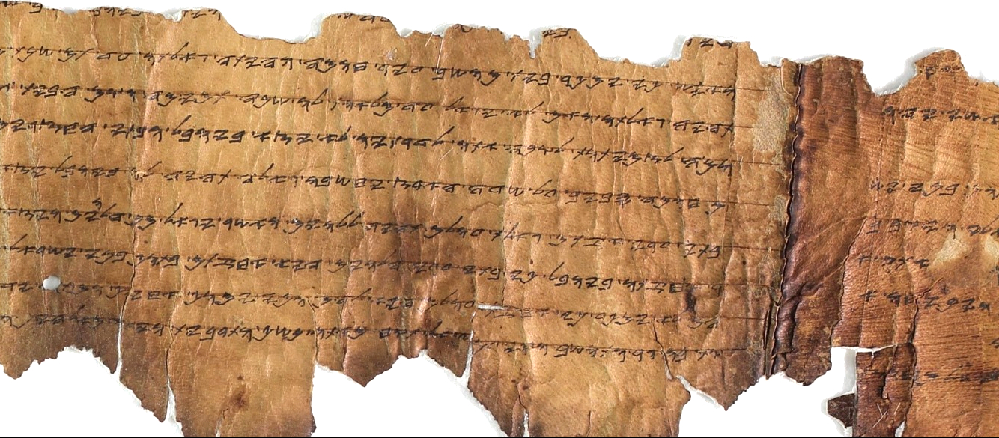

Paleo-Hebrew Leviticus Scroll (11QpaleoLev a)

- Category
- Biblical
- Cave
- Qumran Cave 11
- Completeness
- Substantial fragment
- Current Location
- Israel Antiquities Authority, Jerusalem
- Date Approx
- c. late 2nd century BC - 1st century AD (dating debated)
- Description
- A Hebrew Leviticus scroll in palaeo-Hebrew script, discovered in Cave 11 in January 1956 and held first at the Rockefeller Museum, where it was photographed in 1956 and again in detail by the Israel Antiquities Authority in 1970. It survives as the lower portion of its final columns, on parchment (kid leather, about 100 cm long as preserved), plus eighteen small fragments from earlier chapters. The main sheet covers Leviticus 22-27; the fragments extend coverage to Leviticus 4, 10, 11, 13-17 and 18-22. A single experienced scribe wrote it, with dots as word-dividers and letters suspended from ruled lines.
- Language
- Hebrew
- Location
- Qumran, Judaean Desert
- Manuscript
- Paleo-Hebrew Leviticus Scroll (11QpaleoLev a)
- Manuscript ID
- 11QpaleoLeva / 11Q1
- Material
- Parchment
- Preserved Passages
- Related Books
- Script
- Palaeo-Hebrew
- Significance
- The most substantial Leviticus manuscript from Qumran and a showcase for the ancient palaeo-Hebrew script, the script formerly used for Torah scrolls in pre-exilic Israel. It is considered a primary witness to the proto-Masoretic text of Leviticus, making it a central witness for Leviticus textual history and for the laws of sacrifice, atonement, festivals and holiness in Leviticus 22-27.
- Work
- Leviticus
Verified Checked against the sources listed below. Its core claims — identification, dates, and cited passages — were matched to a scholarly or primary source. About verification
Sources: http://dssenglishbible.com/scroll11Q1.htm
https://www.loc.gov/exhibits/scrolls/libr.html
https://en.wikipedia.org/wiki/Paleo-Hebrew_Leviticus_Scroll
https://www.loc.gov/exhibits/scrolls/libr.html
https://en.wikipedia.org/wiki/Paleo-Hebrew_Leviticus_Scroll
Last reviewed: 2026-10-27